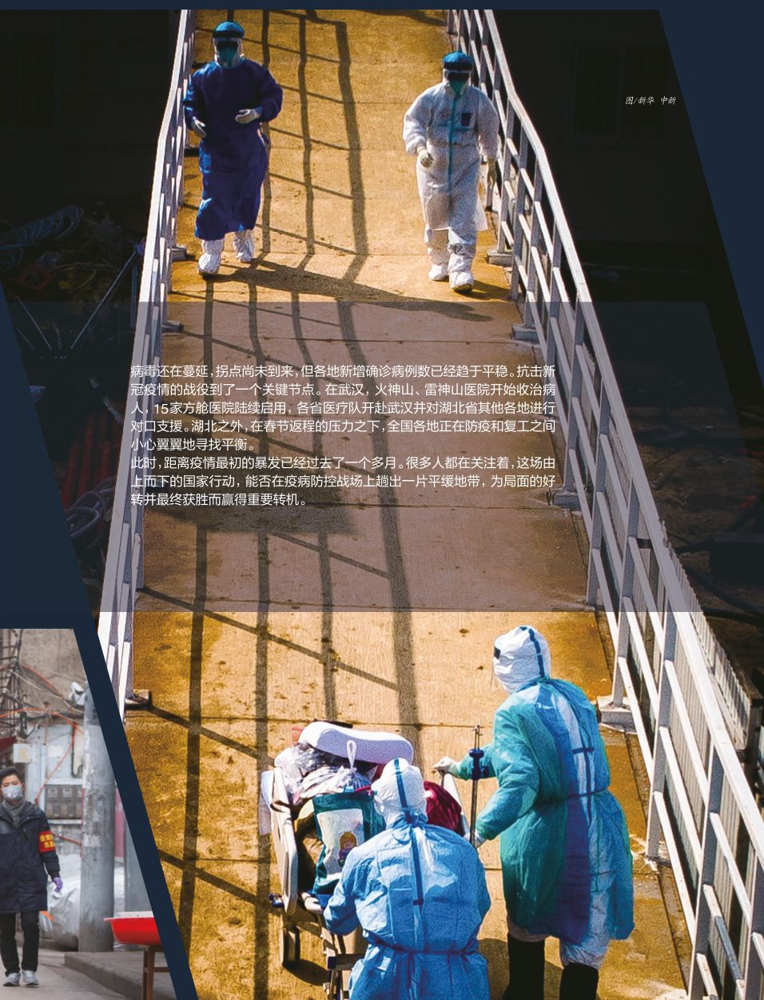
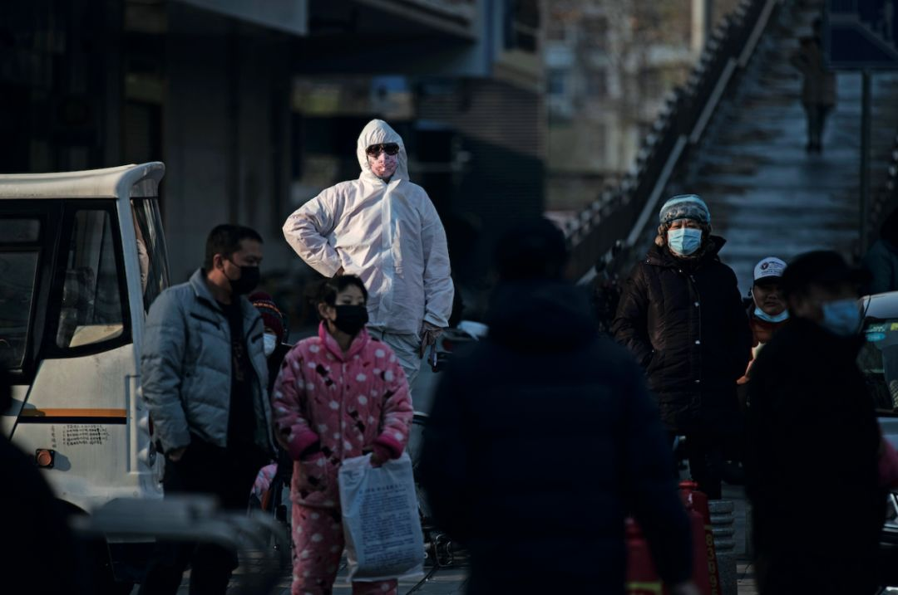

住进方舱医院72小时后，情况明显好转
原文链接 备份链接 武汉紧急改造启用的多个临时性“方舱医院”，承担了此次疫情中数量最大的隔离任务。虽然时间紧任务重，方舱医院的内部运行已经从最初的忙乱走向有序 文 | 《财经》记者 刘以秦 编辑 | 谢丽容 2月6日凌晨3点，在武汉一家 …

伴随着火神山、雷神山医院开始收治病人，15家方舱医院陆续启动，
各省医疗队开赴武汉，武汉所有确诊患者与疑似病例都将“应收尽收”。
在人类抗击疫病的历史上，“武汉会战”已成为一场史无前例的超级行动


图/新华、中新
武汉会战
*本刊记者/刘远航 黄孝光 李明子*
发于2020.2.17总第935期《中国新闻周刊》
凌晨3点钟，来自江汉区各个街道的转运车在武汉国际会展中心门口陆续停下。这是2月6日夜里，临时改建的武展方舱医院刚刚落成，社区隔离点里的部分轻症患者连夜被转移到这里，迎接他们的，是刚刚组建的外地医疗队。
雨一直没有停。王军是江汉区唐家墩街道的一名转运司机，他的同事原本只负责接送1位患者，结果从隔离酒店下来了14个病人，一直忙到凌晨4点，防护服都湿透了，已经失去防护效果。王军接了班，继续送患者去方舱医院。天渐渐亮了，部分患者并不符合入驻要求，也有人不满意里面的条件，他只好把他们原路送回。
这趟任务结束时，已经是晚上11点半。王军穿着防护服，瘫坐在那辆货车改装的转运车里。这些天来，他一直往返于方舱医院、定点医院和社区隔离点之间。从车里往外看，他看到国家紧急医学救援队的物资车停在方舱医院外，轻症患者们从转运车里下来，每人手里都拎着大包小包，等待医护人员的筛查。
这是一场不得不打的战役。
极度紧缺的医疗资源，不断增长的确诊人数，交叉感染的安全隐患，还有到处弥漫着的恐慌心理，都是摆在面前的挑战。最初由一些学者提出的全面排查和分层隔离的建议，逐渐成为社会共识，最终转化为一场超级行动。
1月27日，中共中央政治局委员、国务院副总理孙春兰率中央指导组抵达湖北省武汉市，落实中央应对新冠肺炎疫情工作领导小组的部署要求。2月2日，湖北省疫情防控指挥部召开会议，要求对所有疑似患者进行集中隔离。
短短数日，文件由中央下达到地方，层层传达，直至这套行政系统的神经末梢——武汉市的每一条街道与每一个社区。
2月6日，3所方舱医院在两天之内就改建完毕，开始接收确诊的轻症患者。很快，武汉方面又宣布，方舱数量从最初的3所迅速扩到15所。与此同时，全国的力量也被组织和调动起来，各地医疗救援队源源不断地奔赴武汉。
此时，距离疫情最初的暴发已经过去了一个多月时间。很多人都在关注着，这场由上而下的国家行动，能否在一直忙乱的防控战场中趟出一片平缓地带，为局面的好转赢得机会。

1月28日晚，武汉市江汉区唐家墩街道西桥社区的一个小区里，社区安保员李国华拿着小喇叭喊话让居民注意安全注意防疫。 摄影/长江日报 陈卓
上海医疗救治专家组组长、华山医院感染科主任张文宏指出，眼下，武汉大决战的序幕不过是刚刚拉开。目前仍是发病人数快速上升的阶段，部分病人还未得到确诊而散落在外，估计防控措施真正起效，要待两大“神山医院”全部收治、确诊病人完全隔离后1～2周的时间。届时，疫情的平台期和拐点是可以到来的。这位直言不讳的临床医学专家认为，目前还是“黎明前最黑暗的时候”。
全面动员
刚开始接受采访的时候，周念平说自己“快要死了”。他是武汉市硚口区某社区的主任，年纪三十出头。社区只有8个工作人员，要服务一万多名居民。物业一直没开工，社区工作人员要包打一切，发过一次防护服，但“比纸还薄”，平时只有口罩。一天前，一个确诊病人因为住不进医院，到社区办公室闹，摘下口罩到处吐口水，说要跟他们同归于尽。
“我其实一点也不怕，甚至巴不得被感染。我们现在就算身体扛得住，但精神和心理也扛不住了。过年一天都没休息，接下来还要24小时值班，到这时候，身体也快熬不住了。”周念平对《中国新闻周刊》说。
位于武昌区水果湖街道的放鹰台社区，在疫情暴发之前有15名工作人员。春节来临那段时间，大家都还在忙着组织各种社区惠民项目，包括百家宴和老年人生日会。疫情发生之后，工作人员不断减少，有的是因为老家封路，无法进出；有的父母病重，无法脱身；还有的是自己出现了发热症状。现在，这里只剩下7个人坚持工作。
减员超过半数，社区书记只能身先士卒，事无巨细，包括搀扶发热居民上救护车。1月29日，这位社区书记也感染了，隔离在家。压力全部落在了副书记余娟身上。“现在新增的疑似病例都是因为家里有确诊的患者，密集接触之后家属也出现了发热症状。但问题是，确诊的病人没有地方去，安排不了医院。”余娟告诉《中国新闻周刊》。
医院床位的短缺，是症结所在。很多居民想尽办法，四处托关系，但仍然一“床”难求。一位女子在小区阳台上敲锣，为病重的母亲求助，希望可以住进医院。这段视频在网上广泛传播，而类似的事情每天都在武汉发生。
在余娟看来，混乱的秩序加剧了本就紧张的局面。就诊流程不清晰，无论是确诊患者的住院，还是疑似病例的诊断，还有出现发热症状的居民，都被要求来社区开证明。
余娟说，社区工作人员是“当爹又当妈”。这在所难免——社区是城市实施网格化管理的基础，是传染病防控的第一道防线。网格化管理模式起源于上海市2003年在抗击“非典”时的管理经验，具体做法就是将辖区按照一定标准划分成若干个网格，通过对网格巡查、监督主动发现问题并及时处理。
余娟也接到过上面下发的“告市民书”，留了“888”开头的热线电话。她曾经拿着喇叭在社区里宣传这份文件，说有需求就打热线。但后来居民们纷纷反映，这个号码不是占线就是转接中，根本不起作用，最后还是找到社区头上来。

1月31日，在武汉市汉口新华路，一些送疑似新冠病毒感染者去医院确诊的家属站在路边等消息。摄影/长江日报 金思柳
基层工作人员面对的，还有社区居民在恐慌心理作用下的各种行为与反应。有的疑似病人在隔离期间溜出酒店，偷偷跑到医院做检查，检查结果没事，却谎称自己病重，半夜打电话给社区要求安排车辆，接自己回去。也有很多居民本来只是普通感冒，却坚持去定点医院做检查，结果被交叉感染。
个别市民还有更“奇葩”的行为。有的老人虽独自生活，但子女就住在附近小区，也要求社区为其买菜购物，甚至对商品的牌子有明确要求，需要跑好几个地方才能买到。
基层社区的困境只是武汉疫情防控的一个缩影。武汉负责收治重症病人的定点医院已经人满为患，超负荷运转。更令人揪心的是，不断有医务人员被感染，医护减员情况严峻。
1月22日，武汉市金银潭医院副院长黄朝林被确诊为新冠病毒肺炎，如今仍在隔离病房接受治疗。黄朝林不仅一直奋战在抗疫一线，其间还在《柳叶刀》杂志上发文，解析了武汉最早一批41例病人的情况。
武汉大学中南医院ICU主任彭志勇在《美国医学会杂志》（JAMA）上发表文章称，截至1月28日该院的138例病人中，41.3％可能通过院内感染发生，而57例院内感染的人中有40例皆为医护人员。另据广州市第一人民医院急诊科医生王西富在其个人公号展示的一张统计图，武汉当地已经有超过10家医院出现了15例以上的医护人员确诊病例，截至目前，医护人员的确诊和疑似数量已逾1000人。
“因为要收治四类人员，现在武汉一下子涌现出很多病人，很多人没有收治进来，包括一些孤寡老人。这是一个看着很痛苦的过程，也是我们心理压力大的原因。”武汉协和医院医生郑天明带着哭腔对《中国新闻周刊》说，“医院刚开始动员内科医生，后来很多内科医生、护士倒下了，现在又在动员外科医生和护士。”
“罗马”是不到两天建成的
如果没有这场疫情，武汉洪山体育馆原本应该在此时举办东京奥运会亚洲大洋洲拳击资格赛。但在2月3日，洪山体育馆迎来了一次大转型。来自中南建筑设计院的15人团队，对其展开了一场争分夺秒的改建。按计划，这里要在两天后开张接纳患者。由于时间太紧，他们只能“边设计，边施工，边调整”。
2月1日，中国工程院副院长、呼吸与危重症医学专家王辰到武汉调研。2003年“非典”疫情期间，他担任北京防治“非典”专家组组长。在武汉调研后，他发现大部分都是聚集性的感染，为了集中和分层收治，缓解医院和社区压力，王辰提出建“方舱医院”的建议。
公开资料显示，方舱医院装备通常由一系列具有不同医疗或技术保障功能的方舱组合而成，具有实施早期治疗的救治能力。王辰介绍说，方舱医院是医疗场所，起到集中收治、隔离的效果，患者能得到基本医疗照顾。“迅速把确诊的轻症病人都收治起来，给予医疗照顾，与家庭与社会隔离，避免造成新的传染源，至关重要。”
改建所需的材料十分庞杂，大到电力电缆、方钢、轻型防火板，小到铁钉、螺栓、水管弯头，型号和材质各有不同，配件总数以万记，基本都需要从不同的供应商进行调货。在已经封城的武汉，交通管制增加了运输的难度。
方舱医院建成后，需要6台配电柜来满足三个区域所有医用设备和开关插座的用电需求，然而这种临时配置的配电柜在几乎停摆的武汉很难找到。从2月4日凌晨开始，负责人打遍了供应商的电话，想尽各种办法，终于在100公里外的鄂州找到了符合标准的配件，在政府的协调下，才运送到施工现场。
武昌方舱医院的改建最终只花了36个小时。建成后，医护人员立即开始进驻。方舱以50个床位为一个医疗单元，这样的格局被形容为“大通铺”，不少人担心容易交叉感染。针对这个疑问，国家卫健委后来专门出来澄清说，收治的都是确诊患者，不存在交叉感染的问题。
此前网上流出的一张图片显示，场内原由志愿者铺设的被单五颜六色。志愿者退场后，湖北省肿瘤医院的20名医生齐上阵，正在匆忙套着被褥。“我们肿瘤医院一共负责122张病床，为了统一色调，医院派发了200套消毒被套。”湖北省肿瘤医院医疗队队员谢蓉博士告诉《中国新闻周刊》，她们花了近两小时重新收拾床铺。
据谢蓉介绍，武昌方舱医院分西区、东区和地下室。以东区方舱为例，又分为清洁区、半污染区、污染区和缓冲区，区与区之间用多道门隔开。从医护工作站所在的清洁区，经半污染区进入患者所在的污染区后，医护人员不允许再走“回头路”，而必须从另一侧通道进入缓冲区后，再回到清洁区。
“2月5日上午，场馆内还什么都没有。到下午，已经初具医院模样了。”谢蓉说。当天晚间11点半，武昌方舱医院开始投入使用。当时，记者在门外看到，该医院西区已经接收了第一批病人，入口处有多名保安把守，以防患者闯入。
武昌方舱医院由“国家医疗队+武汉医疗队”主导运行，武汉大学人民医院担任队长单位，已安置床位247张，即将再设253张床位。加上正在紧急改造的床位，将持续开放至800张。依照统一安排，武昌“方舱医院”对口收治武昌区、洪山区和东湖高新区等地区的轻症确诊患者。

2月4日，火神山收治第一批患者进入病区。摄影/中青报·中青网 李峥苨
在武昌方舱医院改建的同时，位于武汉国际会展中心的江汉方舱医院以及位于武汉客厅的东西湖方舱医院也在同时期改建完成。
武汉某地产集团员工付安元原本参与雷神山医院的建设，2月3日下午5点多，他受命先后赶往武汉客厅和武汉国际会展中心，并接下了改建武展为方舱的任务。这是付安元第一次知道“方舱”，根据命令，第二天必须建好。环卫工人已经开始清场，他召集设计团队，在4日凌晨1点拟出改建方案。
设计方案还没形成时，承建方就开始调度材料。材料同样来自多方：桌子和板凳是武汉举办军运会后留下的，床和被褥是从江汉区调度来的，板材则是由厂家直接订货。
凌晨3点多，第一批材料到了，付安元临时调了200个左右的木工和电工，在六七点时做出了第一个病区样板。早上8点多，武汉地铁集团赶来支援，施工工人增至500人。下午4点，所有挡板做成；晚上10点，所有开关、插座装完。
5日凌晨两点半，历时33小时后，他们终于完工交付。江汉方舱医院由武汉协和医院统筹，共有9家国家医疗队、6家武汉医疗队参与救治。《中国新闻周刊》日前探访看到，该医院除场内1600张病床外，场外也搭建起了数十顶医疗帐篷。
早在此前的2月2日，火神山医院已正式交付人民军队医务工作者。6天后的2月8日，雷神山医院也完工交付使用。截至2月10日，火神山医院已接收从武汉各家定点医院转来的患者超过800人，雷神山医院也开始接收患者，已入住80余人。两大“神山医院”是完全新建的，医务人员也多来自外地。
2月6日晚，湖北省副省长杨云彦在新闻发布会上介绍说，目前共有107支医疗队、10596名医疗队员在湖北省协助开展医疗救治工作。他又强调，“但医护人员仍然非常紧缺”。
方舱内外
在武汉医疗界陷入“兵荒马乱”的时候，全国各地的医疗队一批又一批地向湖北集结。一段视频在网上流传，山东齐鲁医院和四川华西医院的医疗队在武汉天河机场偶遇，双方隔着过道互相加油鼓劲儿。这两家医院素有盛名，曾在抗战时期联合办学、办医。
武汉的这场“战事”将更远的地方都裹挟进来，越来越多的医护人员投身到抗疫的洪流中，中国医疗界似乎没有谁可以完全置身事外。宣誓、送别、出征，几天的时间，这样的场面几乎出现在中国所有大型医院的门前。
当方舱医院正在紧张搭建的时候，已经到达武汉的外地医护人员并没有闲着。6日凌晨，来自新疆生产建设兵团医疗队的王一珊到达武汉，在酒店里接受培训。为了减少接触，降低感染风险，医护人员都需要理发，男同志借来推子，自己剃了光头，女同志理了“毛寸”。有的女同事即将结婚，哭着将留了很久的长发剪断。
防护设备的穿脱流程复杂而严谨，而且不断在更改，医护人员需要强化训练，不能有任何岔子。接触确诊患者，需要三级防护。对于王一珊和谢蓉这样非感染科出身的医护人员来说，这是她们第一次穿防护服。
值班期间，医护人员不能上厕所，否则整套防护设备都失去作用。“三十多年了，我又穿上了纸尿裤。”一位在武展方舱内值班的医生调侃自己说。方舱里的医护人员基本都会在防护服里穿一件成人纸尿裤，一名护士在值班期间实在憋不住，“解决问题”后，只能站着，不敢再坐下。
“医生在里面值班压力非常大，每班6小时，用我们外科医生话说，比站10个小时手术都累。”海南队副领队陈潇男对《中国新闻周刊》说。再加上穿脱防护服需要排队，前后长达9个小时，基本不吃不喝。
陈潇男每次在酒店看到刚轮岗回来的医护人员，一个个都耷拉个脑袋，说话的力气都没有了。体力消耗太大，有的护士出来时，吃了两份盒饭。2月8日元宵节当天，正好也是陈潇男队友的生日，下午5点照例进行的防护培训结束后，大家分好蛋糕和元宵，各自带回房间食用，避免出现感染。
医护人员已经整装待命，周边的各个街道则开始统筹协调，将轻症患者从隔离酒店转运到方舱医院。“应收尽收”，这是他们接到的任务。放鹰台社区有4名患者被转移到了武昌方舱医院，副书记余娟后来得知，原计划是转移到另外的隔离点，半夜两三点钟才送到了方舱医院。
街道除了负责转运患者，还要落实“全民测体温”。6日上午，武汉市疫情全面排查动员部署会召开，要求“举全市之力”，入户上门排查“四类人员”，争取“不落一户，不漏一人”。这项命令由武汉市下达到各个街道，并传递到基层社区。
6日下午4点钟，余娟接到了水果湖街道下来的通知，按照“全民量体温”的文件精神，他们需要入户上门，挨家排查，一共5000多户。体温超过37.3℃，是判断发热的标准。
余娟和同事开始行动，但很快就遇到了困难。恐慌心理让居民们闭户关门，担心传染，根本不愿见人。也有部分居民愿意配合社区的工作，从下午到晚上，社区完成了73户的排查。余娟将问题反映给了街道。
同样的经历，各个基层社区的工作人员都遇到过。在硚口区长丰街道某社区，主任周念平要在第二天上午11点之前，和结对帮扶的下派干部一起，完成3000多户的排查，永远也填不完的报表，让他的下班时间一再延后。
方舱医院的建成多少缓解了床位的紧缺，但烦恼仍然存在。一位患者在方舱医院门口排了三个小时的队，患者家属回来后就在社区使劲砸门发泄不满，这让周念平感到沮丧。
而在百泽社区，副主任王丽芬负责的网格有300多户居民，她需要第二天上午完成100多户的排查。她来不及吃饭，还出现了呕吐症状。接电话的时候，说话语气中夹杂着焦急情绪，像是变了一个人。
余娟也有困惑。新冠肺炎的诊断很难，起病轻，轻症患者甚至不发烧。“现在全民测体温，但并不是体温正常就一定没有感染，如果不做胸部CT与核酸检测，即使是医生可能也判断不出来。”然而，现实中，也不可能对每一位武汉市民都做这样的检查。但这样的思考，只能放进肚子里。眼下，完成组织指派的工作才是第一位的，动作慢了，就是延误抗疫大计。
到了第二天，根据上级指示，放鹰台社区的余娟和同事改变了策略，采取线上自查与上门排查相结合的方式，利用微信群和微邻里，让居民们主动提交体温结果。其他社区也基本采用了这样的形式。除了原有的7名工作人员，市和区里下派了一批干部，专门负责社区里的独居和空巢老人。
诺亚方舟
2月6日凌晨3点，位于洪山体育馆的武昌方舱医院迎来了医院和社区隔离点转运过来的90多名患者。为防止交叉感染，馆内的中央空调已经关闭。夜半天寒，外面又下着冬雨。几乎是同时，位于武展中心的江汉方舱医院也开始接收患者。
按照官方发布的收治标准，患者统一由政府组织转入方舱医院。方舱医院只接受65岁以下、没有严重并发症的肺炎轻症患者。但由于定点医院床位太紧张，一些社区便将一些重症病人也往方舱医院送。

当天凌晨1点，来自硚口区的确诊患者赵志国忽然接到社区电话，说方舱医院已经腾好了两张床位。赵志国的情况特殊，他70岁的母亲同样感染了病毒，是重症患者，且双目失明。母子二人一直在家里等待，跟家属也没有隔离。感染之后，赵志国立刻上报到物业，但自家楼门口的“无感染门洞”标识并没有被修改。
到达方舱医院后，社区的一位工作人员建议他将母亲的年龄说低一些，病情说轻一些，赵志国不同意。他认为，母亲的病情已经属于危重症，方舱医院的条件根本无法满足其医疗需求。折腾到凌晨三四点，还下着雨，赵志国带着母亲离开了方舱。两天之后，他终于等来了定点医院的床位，将母亲送进去，自己则住进方舱医院。
第一天早上，有人反映武昌方舱医院“没有医药，没有暖气，没有电，没有吃的”。对此，武汉市副市长李强对《中国新闻周刊》说：“我们按照属地管理原则，正在抓紧研究解决，相信情况很快会转入正轨。”李强同时强调，“方舱医院就像王辰院士说的，不是万全之策，但是个比较急、比较好的选择。我对这点是坚信不疑的。”
谢蓉说，患者入驻武昌方舱医院的头天早上，确实出现了“没人管饭”的问题。她解释说，因为患者的餐食放在清洁区，医护人员交接班时没有沟通好，未能把盒饭带进去。“医护人员进入污染区后，是无法走回头路的。”为此他们立下规定，此后患者的盒饭都由接班医护人员带进方舱。
江汉方舱医院出现了类似的状况。“刚来第一天上午没发药，大家情绪比较大。现在有吃有喝的，没有空调，但是有电热毯，不会太冷。”患者徐英然对《中国新闻周刊》说，下午发了药，大家心里安定了许多。
在武昌方舱医院，患者之间彼此以“舱友”相称。“王辰院士说方舱是一艘诺亚方舟，来这的都是避难的，舱友们患难与共。”一位名叫黄凤英的患者如是说，尽管焦虑情绪仍然存在。
患病之际，人们常常被一些寻常的事物所打动。黄凤英记得，省妇幼的一位姓王的主任，每次探视，都会想办法将每个病人逗得哈哈大笑。来自山东齐鲁医院的医护人员专门编写了方言手册，减少因语言带来的交流障碍。蔓延的疫情已经造成了太多的隔阂，尤其是心理的裂隙，这同样需要弥合。这两天，方舱医院的一些患者，已经开始跳起了广场舞。
在方舱之外，运送患者的车辆仍然在忙碌。王军是来自江汉区唐家墩街道的司机，这是和医护人员一样危险的工作，厚重的防护服一直穿在身上，呼出的热气在口罩上变成水，流下来。
唐家墩街道也是华南海鲜市场的所在地。方舱并非万全之计，新的社区隔离点还在不断增加，王军在接受采访时提到，唐家墩街道的一家酒店刚刚腾出来，而政府已经将征用的范围扩大到了部分高校的学生宿舍。
疫情发生以来，王军一直在定点医院、社区隔离点和方舱医院之间往来。他像是一个在战场上来回穿梭的人，感受着周围人们的情绪和心理变化。有一次，他送两个轻症患者去方舱医院，一个病人说，“准备住到社区里，一直住到定点医院有床位为止。”另一位患者就劝他说，“这样是不对的，社区已经够辛苦了。”
形势每天都在发生变化。更加明晰的就诊流程让社区工作开始恢复秩序。放鹰台社区副主任余娟对《中国新闻周刊》介绍，对于确诊和重症病人，社区上报到街道，街道上报到区，统一安排床位。新增的轻症患者由街道和社区安排进入方舱医院，密切接触者则被安置在社区隔离点。
随着方舱医院和社区隔离点的扩充，基层社区的压力有望得到进一步的缓解。放鹰台社区的四名轻症病人被转移到武昌方舱医院，但那里的床位有限。这两天新增的确诊患者，都被转移到了东西湖方舱医院，那里能容纳2000个床位。
“数字上，新发病例在减少，我觉得这是一个可喜的现象。但是，发病人数前期积累的比较多，所以目前来说，从新发病的人数减少到就诊人数减少，这中间还会有一定的时间差。”武汉协和医院感染科主任医师赵雷对《中国新闻周刊》说。
2月9日，武汉市的各个社区都接到了“死命令”，要求尽快收治所有的确诊患者和疑似病例。在官方的描述中，“应收尽收”的行动已经进入总攻阶段。
（应受访者要求，文中王一珊、周念平、王丽芬、余娟、王军、程天明为化名）

值班编辑：石若萧
推荐阅读
▼


暂停各类高校就业现场招聘，这届毕业生太难了

原文链接 备份链接 武汉紧急改造启用的多个临时性“方舱医院”，承担了此次疫情中数量最大的隔离任务。虽然时间紧任务重，方舱医院的内部运行已经从最初的忙乱走向有序 文 | 《财经》记者 刘以秦 编辑 | 谢丽容 2月6日凌晨3点，在武汉一家 …
原文链接 备份链接 2 月 9 日下午，在被方舱医院「退回」4 天后，刘俊一家被街道居委会通知，当日会安排车辆送其父母入院治疗。 在此之前，经历了数日的网络求助，刘俊一度感到入院无望，特别是在父亲退烧后，几乎接受了无法入院治疗的事实。对于 …
原文链接 备份链接 在医学专家们看来，集中收留、隔离是第一步。接下来对疑似病患的确诊、分类诊治、收治入院，将是对医疗、物资、人员分配等多重资源配置能力的综合考验，相信各方面群策群力可以渡过难关 2月3号上午8点，人们在七医院门口排队等待核 …
原文链接 备份链接 来源：雪球App，作者： 八点健闻，（https://xueqiu.com/1553077980/140215390） 岳父发烧9天 ，妻子发烧6天 ，CT报告都显示“双肺严重感染” ，却一直没能得到检测 ，确认是不是 …
原文链接 备份链接 澎湃新闻记者 赵思维 廖艳 薛莎莎 2月11日16时许，武汉武昌方舱医院首批28名新冠肺炎患者康复出院。澎湃新闻（www.thepaper.cn）记者现场看到，来自不同街道办和社区的工作人员提前来到等候区，举牌等患者出 …